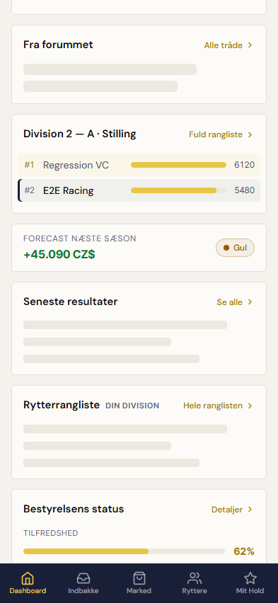
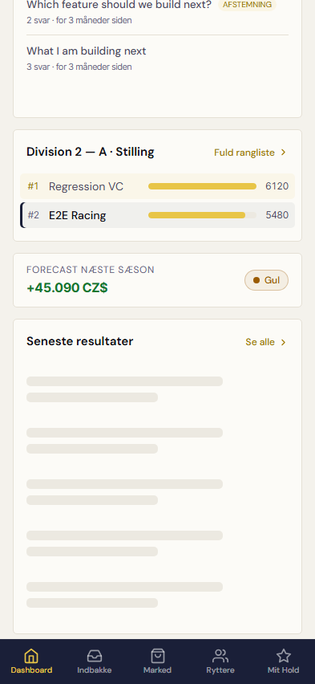

Rigtige browserskærmbilleder med faste testdata. Annoteringerne ligger uden for billederne; UI-pixels er uændrede.
Før · mobil, mens resultater hentes
1Korte skeleton-linjer reserverer mindre plads end den færdige liste.

Efter · mobil, mens resultater hentes
2Stille grå pladsholdere reserverer listens plads. Kortets overskrift og ramme bliver stående.
